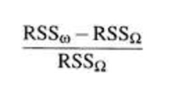
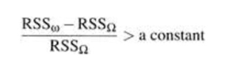
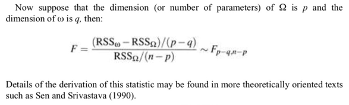
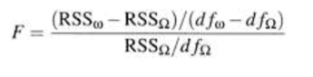
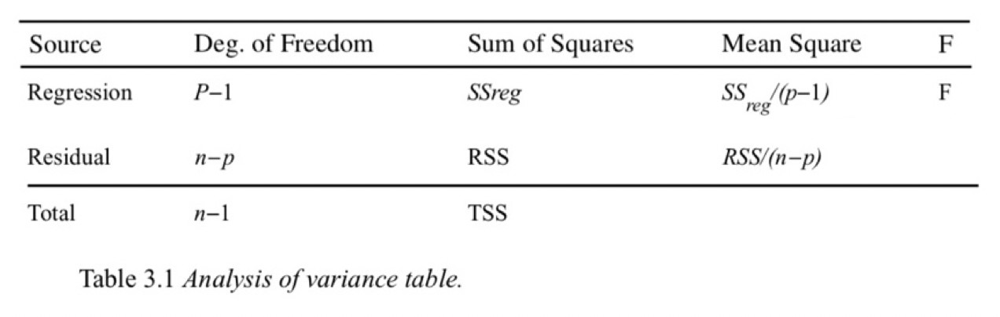

在阅读文献时候，常遇到一个lm （linear regression）后，紧跟就是一个anova。
linear regression和anova是什么关系呢？
不如直接看一个例子.
set.seed(897) # this makes the example exactly reproducible
y = c(rnorm(10, mean=0, sd=1),
rnorm(10, mean=-.5, sd=1),
rnorm(10, mean=.5, sd=1) )
g = rep(c("A", "B", "C"), each=10)
model = lm(y~g)
summary(model)##
## Call:
## lm(formula = y ~ g)
##
## Residuals:
## Min 1Q Median 3Q Max
## -1.6315 -0.5772 -0.2407 0.5778 1.7913
##
## Coefficients:
## Estimate Std. Error t value Pr(>|t|)
## (Intercept) 0.23057 0.31191 0.739 0.466
## gB -0.96251 0.44111 -2.182 0.038 *
## gC -0.07276 0.44111 -0.165 0.870
## ---
## Signif. codes: 0 '***' 0.001 '**' 0.01 '*' 0.05 '.' 0.1 ' ' 1
##
## Residual standard error: 0.9864 on 27 degrees of freedom
## Multiple R-squared: 0.1794, Adjusted R-squared: 0.1187
## F-statistic: 2.952 on 2 and 27 DF, p-value: 0.06925anova(model)## Analysis of Variance Table
##
## Response: y
## Df Sum Sq Mean Sq F value Pr(>F)
## g 2 5.7446 2.8723 2.9523 0.06925 .
## Residuals 27 26.2684 0.9729
## ---
## Signif. codes: 0 '***' 0.001 '**' 0.01 '*' 0.05 '.' 0.1 ' ' 1上面这个pseudo-dataset，用lm和anova，得到的P value是一致的。
在Linear Models With R by Julian Faraway 这本书中，Chapter 3解释了anova和lm搅和在一起的是是非非。
首先是，在predictor是categorical data，response是numerical data的情况下，拟合一个lm模型，就是在做一个统计检验hypothesis testing.
做lm后，会有一个量汇报出来，RSS，拟合模型所不能解释的变异有多少。可以想见，一个组别一个mean模型所不能解释的方差肯定比grand mean要小，毕竟参数多。 那么，w指的是小模型，即grand mean。Omega指的是大模型，即lm。

就会是一个蛮好的检验统计量test statistic，并且它一定是一个非负数。
如果这个统计量大于一定数值的话，就说明小模型能解释的东东太少了，或者大模型是在太强大了，能解释大部分数据的变异。那么就就拒绝小模型，接受大模型lm。
Anova的设计便是如此。

我们来算一个F统计量，大于一定数值之后，F分布的尾部面积就太小，那么就拒绝原假设，接受lm。
对于lm而言，

小模型自由度为dfw：n-1
大模型自由度为dfomega：n-p
所以dfw-dfomega = (n-1)-(n-p) = p-1

所以才经常会看到上面这种表格。 用的东西实际上是模型所不能解释的数据的变异性。 Source那一栏中，Regression是anova F统计量的分子,表示经过自由度矫正的两个模型所不能解释的残差的差别；Residual是分母，表示大模型所不能解释的残差的大小。